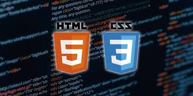

HTML och CSS

Jag har lärt mig grunderna i HTML och CSS, inklusive hur man skapar
välstrukturerade webbsidor med semantiska HTML-element och stajlar
dem med CSS. Jag har arbetat med layouttekniker som Flexbox och Grid,
samt använt media queries för att skapa responsiva och användarvänliga
webbdesigns.
Java

Jag har lärt mig grunderna i Java, inklusive objektorienterad
programmering med klasser, arv och metoder. Jag har också arbetat
med att hantera fel med undantag och skapat enklare applikationer,
både för konsol och grundläggande funktionalitet.
HSQL
Jag har lärt mig grunderna i HSQL, inklusive hur man skapar
och hanterar databaser, tabeller och förfrågningar.
Jag har arbetat med att skriva SQL-satser för att hämta, uppdatera
och radera data samt optimerat enklare databasstrukturer för
bättre prestanda.
Javascript

Jag har lärt mig grunderna i JavaScript, inklusive hur man
manipulerar DOM, hanterar händelser och skapar dynamiska gränssnitt.
Jag har också arbetat med funktioner, loopar och villkor för att bygga
interaktiva och responsiva webbapplikationer.
Problemhantering
Jag har lärt mig att hantera problem genom att felsöka kod,
identifiera fel och implementera lösningar. Detta inkluderar att
analysera felmeddelanden, använda loggning för att spåra buggar
och bryta ner komplexa problem i mindre, hanterbara delar för
att effektivt lösa dem.